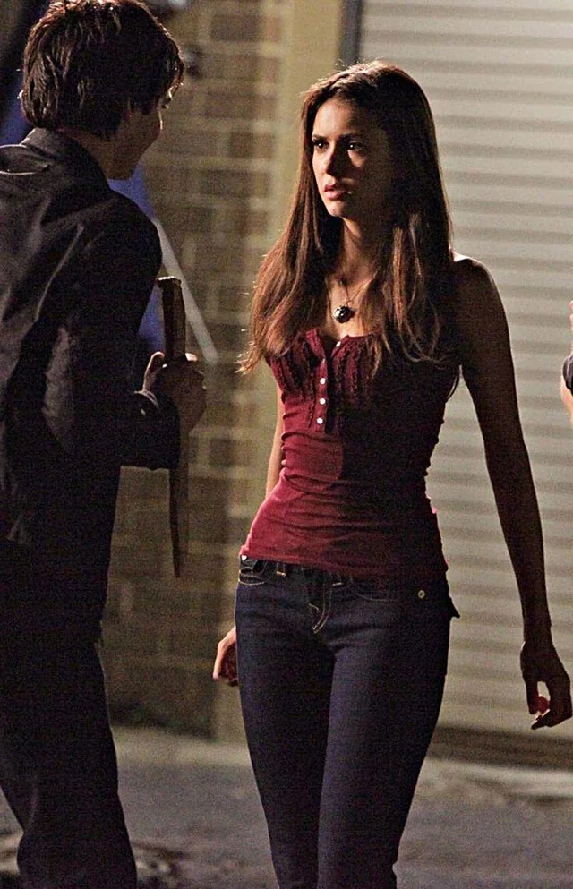

Welcome to Mystic Falls

Elena Gilbert is the main protagonist of The Vampire Diaries. She is a human-turned-vampire who becomes the center of the Salvatore brothers' affections. Strong-willed, compassionate, and fiercely protective of her loved ones, Elena navigates the dangerous supernatural world of Mystic Falls while trying to maintain her humanity.
Elena was born on June 22, 1992, and grew up in Mystic Falls, Virginia. After her parents died in a car accident, she lived with her aunt Jenna and younger brother Jeremy. She was a doppelgänger of Katherine Pierce, which made her a target for various supernatural beings. Elena became a vampire in Season 4 after drowning and being given vampire blood by Damon. Her transition was particularly difficult as she struggled with her new nature and the loss of her humanity. Eventually, she took the cure for vampirism and became human again.
Elena is known for her compassion, selflessness, and unwavering loyalty to her friends and family. She is strong-willed and determined, often putting others' needs before her own. Despite facing numerous tragedies and challenges, Elena maintains her humanity and moral compass throughout her journey.
Elena's greatest strength is her ability to love deeply and unconditionally. She forms strong bonds with those around her and is willing to sacrifice herself for the greater good. Her relationship with both Salvatore brothers shapes her character significantly - initially drawn to Stefan's goodness and stability, she eventually finds her true love in Damon, who helps her embrace her more passionate and impulsive side.
Throughout the series, Elena struggles with loss, grief, and the weight of being a doppelgänger. She is fiercely protective of her loved ones, especially her brother Jeremy and her best friends Caroline and Bonnie. Elena's journey from a grieving teenager to a confident young woman who finds love and purpose is central to the show's narrative.
Since The Vampire Diaries ended in 2017, Nina Dobrev has continued her successful acting career. She has appeared in various film and television projects, including the comedy film "The Final Girls" and the Netflix series "Fam."
Nina has also expanded into producing and has worked on several projects behind the camera. She remains active in the entertainment industry and continues to take on diverse roles that showcase her range as an actress. Her dual portrayal of both Elena Gilbert and Katherine Pierce remains one of her most acclaimed performances.
Nina has also been involved in various philanthropic efforts and continues to maintain a strong connection with her fans. Her portrayal of Elena Gilbert remains one of the most iconic and beloved characters in supernatural television.
Nina Dobrev - Nina also portrayed Katherine Pierce, Elena's doppelgänger, throughout the series.